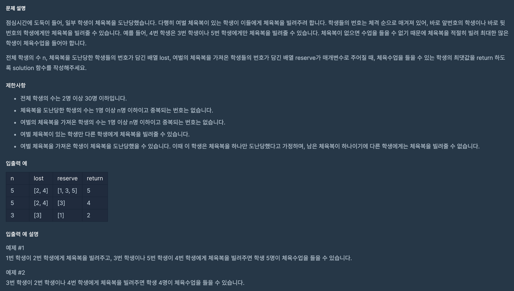

프로그래머스 문제 풀이: 42862 - 체육복

문제 파악
- 체육복을 도난당한 학생들이 얼마나 많은 체육복을 빌릴 수 있는지를 구해야 한다.
- 체육복은 주변 학생으로부터 빌릴 수 있는 것이 핵심으로 보인다.
- 제한사항에 의한 예외 케이스에 주의한다.
문제 풀이
체육복을 도난당한 학생들을 기준으로 차례대로 각 학생이 빌릴 수 있는 경우를 구한다면, 최종적으로 최대한 많은 학생이 체육복을 빌릴 수 있게 된다. 이처럼 부분 최적해(각 학생이 빌릴 수 있는 경우)를 구하면, 전체 최적해를 구할 수 있으므로 탐욕(Greedy) 알고리즘을 이용할 수 있다.
부분 최적해를 구하기 앞서 제한사항을 보면, 다음과 같은 문구가 있다.
- 여벌 체육복을 가져온 학생이 체육복을 도난당했을 수 있습니다. 이때 이 학생은 체육복을 하나만 도난당했다고 가정하며, 남은 체육복이 하나이기에 다른 학생에게는 체육복을 빌려줄 수 없습니다.
이 말은 어떤 학생이 도난당한 학생에 속할 수도, 여벌의 체육복을 가진 학생에 속할 수도 있다는 것이다. 따라서 이것을 먼저 필터링해 체육복을 빌려야만 하는 학생과 여벌의 체육복을 빌려줄 수 있는 학생을 다시 구한다.
reserve_lost = set(lost).intersection(set(reserve))
lost = sorted(set(lost) - reserve_lost)
reserve = list(set(reserve) - reserve_lost)이제 체육복을 도난당한 학생들을 정렬을 통해 줄지어 서게 하고 체육복을 빌리게 하면, 앞에서부터 최대한 체육복을 빌리려고 할 것이다. 빌린 후에는 해당 학생을 도난당한 학생 목록에서 제거하고, 빌려준 학생을 여벌 체육복을 가진 학생 목록에서도 제거해야 한다.
for p in list(lost):
if p - 1 in reserve:
reserve.remove(p - 1)
lost.remove(p)
elif p + 1 in reserve:
reserve.remove(p + 1)
lost.remove(p)최종적으로 전체 학생 수 n에서 체육복을 빌리지 못한 학생 수(도난당한 학생 목록에 남은 학생 수) len(lost)를 빼면 된다.
풀이 소스
문제 풀이 환경: Python 3
1
2
3
4
5
6
7
8
9
10
11
12
13
def solution(n, lost, reserve):
reserve_lost = set(lost).intersection(set(reserve))
lost = sorted(set(lost) - reserve_lost)
reserve = list(set(reserve) - reserve_lost)
for p in list(lost):
if p - 1 in reserve:
reserve.remove(p - 1)
lost.remove(p)
elif p + 1 in reserve:
reserve.remove(p + 1)
lost.remove(p)
return n - len(lost)